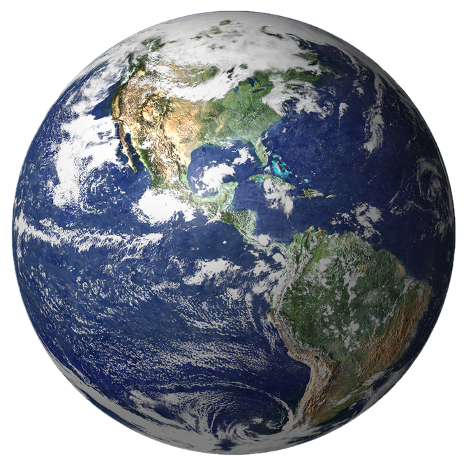
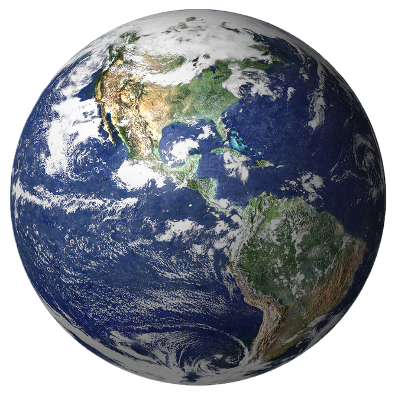

History
Foundation and Early Years (1960-1970)
ISRO's foundation can be traced back to the establishment of the Indian National Committee for Space Research (INCOSPAR) in 1962. Dr. Vikram Sarabhai, often regarded as the founding father of the Indian space program, played a crucial role in its inception. He recognized the potential of satellite technology and its applications, and under the guidance of India's first Prime Minister, Jawaharlal Nehru, space research was placed under the Department of Atomic Energy in 1961. INCOSPAR, with Dr. Sarabhai as its Chairman, was tasked with overseeing space research in India
Creation of ISRO (1969)
On August 15, 1969, INCOSPAR was restructured and transformed into the Indian Space Research Organization (ISRO). It became an independent space agency, marking a significant milestone in India's space exploration journey. The establishment of ISRO institutionalized space research activities in the country and laid the groundwork for future advancements
Satellite and Launch Vehicle Development (1970-1980)
During the 1970s, ISRO made significant progress in satellite technology and the development of launch vehicles. India's first satellite, Aryabhata, was successfully launched on April 19, 1975, with the assistance of the Soviet Union. This marked India's entry into space technology and exploration
Seventh country in world to have its own capability to launch satellite into orbit
ISRO continued to expand its space program, launching sounding rockets and developing its own launch vehicles. Notably, the Rohini program saw the launch of sounding rockets of increasing complexity and size. This led to the development of India's first indigenously designed and launched satellite, Rohini-1, onboard the Satellite Launch Vehicle (SLV-3) on July 18, 1980. With this achievement, India became the seventh country in the world to have its own indigenous capability to launch satellites into orbit
1990s
India's Remote Sensing Satellite (IRS) program was expanded during this period, with the launch of multiple satellites for resource monitoring and management. The IRS satellites played a crucial role in applications like agriculture, forestry, land use, and disaster management.
SRO also developed and launched communication satellites, like the Indian National Satellite (INSAT) and the GSAT series, which significantly improved telecommunications and television broadcasting across the country
In 1993, ISRO launched the Polar Satellite Launch Vehicle (PSLV) for the first time, successfully placing the IRS-1E satellite into orbit. PSLV became a reliable and versatile workhorse for launching various satellites into different orbits
Early 21st Century
On October 22, 2008, ISRO achieved a major milestone with the launch of Chandrayaan-1, India's first lunar probe. The mission included a lunar orbiter and an impactor, and it played a crucial role in discovering water molecules on the Moon's surface.
ISRO continued to improve its launch vehicle technology, making advancements in the PSLV and GSLV programs. Successful launches and international commercial satellite launch contracts bolstered India's reputation as a reliable and cost-effective launch service provider
In November 2013, ISRO achieved a historic feat with the launch of the Mars Orbiter Mission (Mangalyaan). India became the first Asian nation to reach Mars orbit and the fourth space agency in the world to do so. The mission's success demonstrated India's capabilities in interplanetary exploration.
In September 2015, ISRO launched ASTROSAT, India's first dedicated astronomy satellite. ASTROSAT enabled multi-wavelength observations of celestial bodies and cosmic sources, contributing to significant advancements in astrophysics and space research.
Chandrayaan-3 Mission
Chandrayaan-3 is a lunar mission by ISRO and serves as a follow-up to the Chandrayaan-2 mission. The objective of Chandrayaan-3 is to demonstrate various capabilities, including reaching the orbit of the moon, achieving a soft landing on the lunar surface using a lander, and deploying a rover to study the lunar terrain. Unlike Chandrayaan-2, which had an orbiter, the Chandrayaan-3 mission includes only a lander and a rover
Future
Gaganyaan
One of the most ambitious upcoming missions of ISRO is the Gaganyaan mission. It aims to send Indian astronauts (Gagannauts) into space aboard an indigenous crewed spacecraft. The mission is planned to have both orbital and suborbital flights, and it will mark India's entry into human spaceflight. As per the earlier plans, the first crewed mission was expected to take place in 2022-2023.
Aditya-L1
Aditya-L1 is a solar mission that aims to study the Sun from a stable orbit around the Lagrangian point L1, which is about 1.5 million kilometers from Earth. The mission's primary objective is to study the Sun's outermost layer, called the corona, and understand the dynamics of solar storms and their impact on space weather
Shukrayaan
Shukrayaan is an upcoming mission to Venus. The mission aims to study Venus's surface, atmosphere, and geology. It will be India's first interplanetary mission to Venus and is expected to provide valuable insights into the planet's environment.